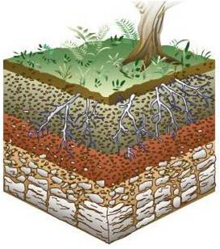
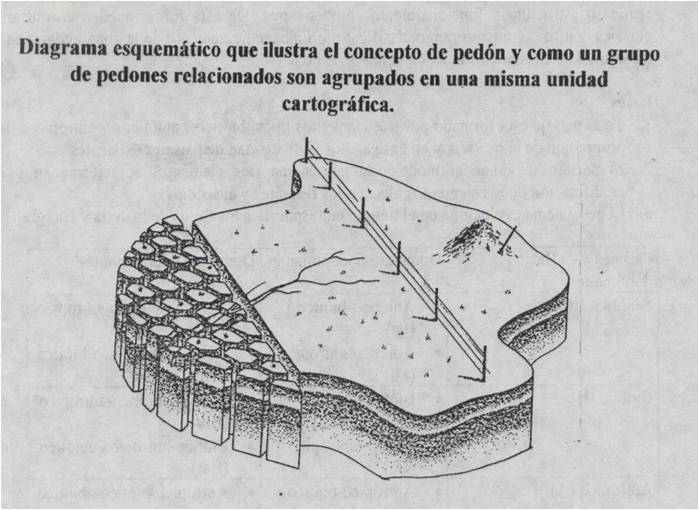

Unidades de estudios de los suelos
Para estudiar los suelos es necesario establecer formas de penetrar dentro de él y realizar observaciones de sus características. Existen diferentes unidades para el estudio de los suelos, siendo las más comunes:
El perfil
En una corte del suelo, en dos dimensiones, que se extiende desde la superficie del suelo hasta la profundidad en donde se ubica el material parental y permite visualizar y estudiar las características del suelo. Los perfiles del suelo se pueden obtener cuando se abren huecos o calicatas en el suelo, en donde las caras expuestas de la calicata corresponden a los perfiles.
El pedón
En una unidad tridimensional o volumen de suelo, en el cual se pueden visualizar o estudiar las características de los suelos desde diferentes ángulos. Se establece, construyendo una trinchera alrededor de un volumen de suelo. El área superficial recomendada del pedón se encuentra entre 1 a 10 m2.
El polipedón
Se refiere a un conjunto de pedones que conforman un individuo suelo. Usualmente cuando se requiere realizar una buena caracterización de un suelo particular, se deben establecer varios pedones.
- «
- »